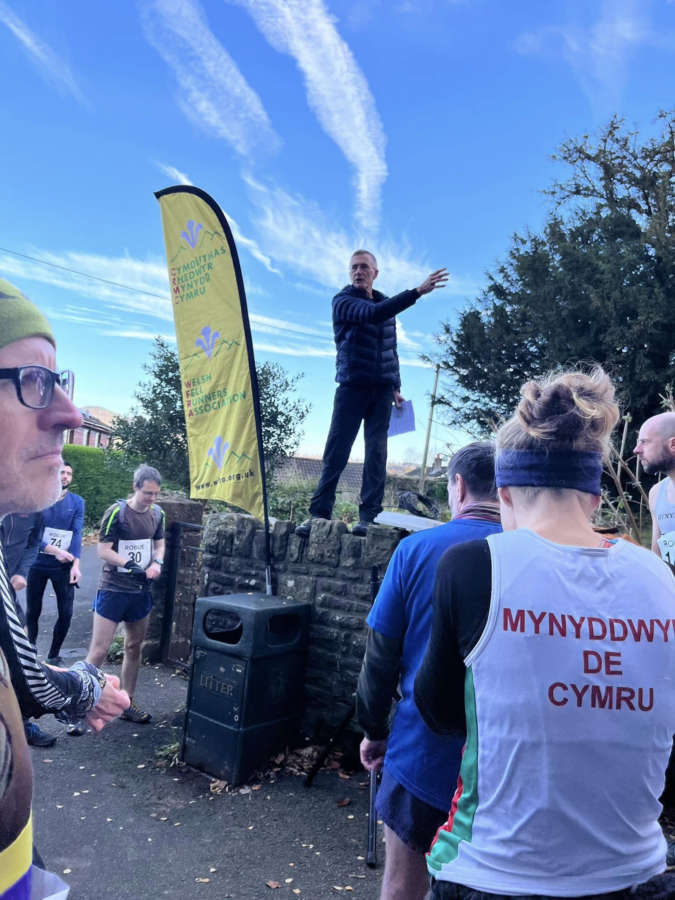
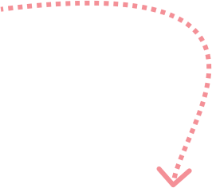
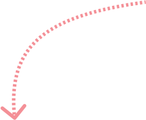
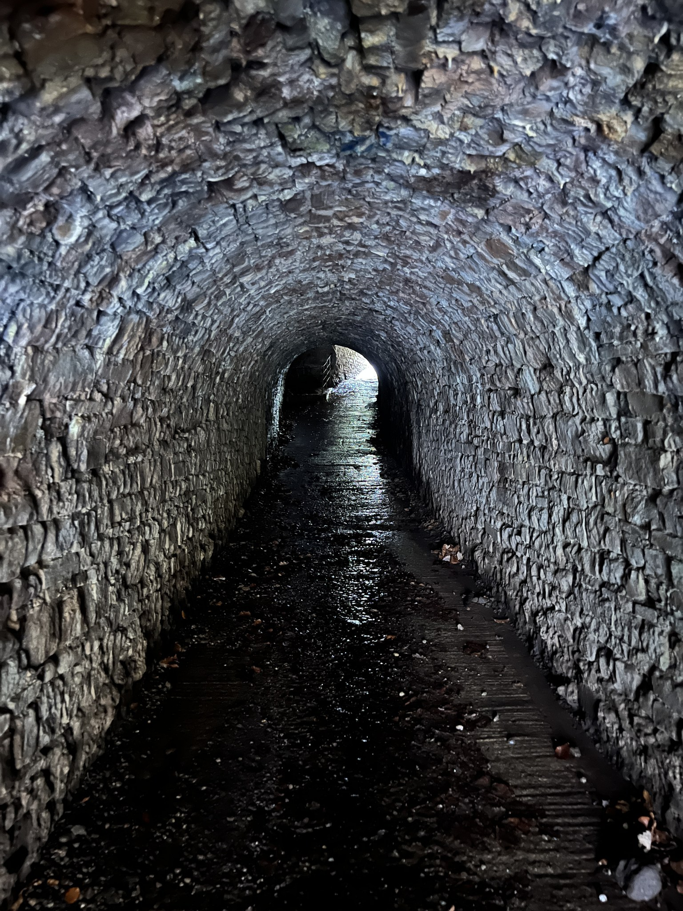

Route / Llwybr
The 2026 race is 5.7 km with 485 m of ascent. The race starts at the bottom of Church Lane, Llanfoist.
The authoritative 2026 route and map have not yet been published. Further details will be published before entries open. The guide and photographs below show the route used previously and should not be relied on as the confirmed 2026 route.


The start / Y cychwyn

The tunnel / Y twnnel



The tram road / Y ffordd drams
The steep bit / Y rhan serth


The trig, and now back down. / Y trig, ac yn awr yn ôl i lawr.
The finish / Y gorffen

2026 route documents
The confirmed route map and any public assessment information will be published when available.